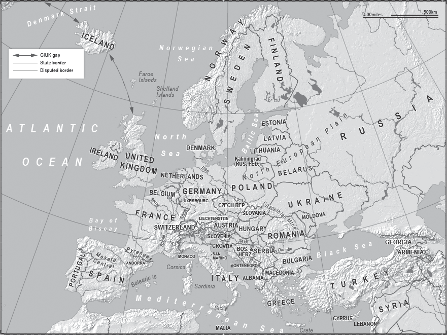
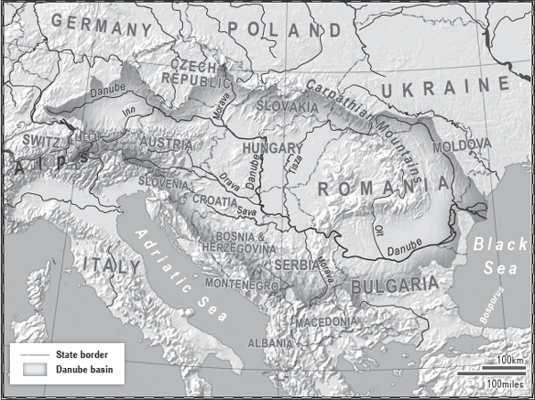

‘Here the past was everywhere, an entire
continent sown with memories.’
Miranda Richmond Mouillot, A Fifty-Year Silence:
Love, War and a Ruined House in France

THE MODERN WORLD, FOR BETTER OR WORSE, SPRINGS FROM Europe. This western outpost of the great Eurasian land mass gave birth to the Enlightenment, which led to the Industrial Revolution, which has resulted in what we now see around us every day. For that we can give thanks to, or blame, Europe’s location.
The climate, fed by the Gulf Stream, blessed the region with the right amount of rainfall to cultivate crops on a large scale, and the right type of soil for them to flourish in. This allowed for population growth in an area in which, for most, work was possible all year round, even in the heights of summer. Winter actually adds a bonus, with temperatures warm enough to work in but cold enough to kill off many of the germs which to this day plague huge parts of the rest of the world.
Good harvests mean surplus food that can be traded; this in turn builds up trading centres which become towns. It also allows people to think of more than just growing food and turn their attention to ideas and technology.
Western Europe has no real deserts, the frozen wastes are confined to a few areas in the far north, and earthquakes, volcanoes and massive flooding are rare. The rivers are long, flat, navigable and made for trade. As they empty into a variety of seas and oceans they flow into coastlines which are, west, north and south, abundant in natural harbours.
If you are reading this trapped in a snowstorm in the Alps, or waiting for flood waters to subside back into the Danube, then Europe’s geographical blessings may not seem too apparent; but, relative to many places, blessings they are. These are the factors which led to the Europeans creating the first industrialised nation states, which in turn led them to be the first to conduct industrial-scale war.
If we take Europe as a whole we see the mountains, rivers and valleys that explain why there are so many nation states. Unlike the USA, in which one dominant language and culture pressed rapidly and violently ever westward, creating a giant country, Europe grew organically over millennia and remains divided between its geographical and linguistic regions.
The various tribes of the Iberian Peninsula, for example, prevented from expanding north into France by the presence of the Pyrenees, gradually came together over thousands of years to form Spain and Portugal – and even Spain is not an entirely united country, with Catalonia increasingly vocal about wanting its independence. France has also been formed by natural barriers, framed as it is by the Pyrenees, the Alps, the Rhine and the Atlantic Ocean.
Europe’s major rivers do not meet (unless you count the Sava, which drains into the Danube in Belgrade). This partly explains why there are so many countries in what is a relatively small space. Because they do not connect, most of the rivers act, at some point, as boundaries, and each is a sphere of economic influence in its own right; this gave rise to at least one major urban development on the banks of each river, some of which in turn became capital cities.
Europe’s second-longest river, the Danube (1,780 miles), is a case in point. It rises in Germany’s Black Forest and flows south on its way to the Black Sea. In all, the Danube basin affects eighteen countries and forms natural borders along the way, including those of Slovakia and Hungary, Croatia and Serbia, Serbia and Romania, and Romania and Bulgaria. Over 2,000 years ago it was one of the borders of the Roman Empire, which in turn helped it to become one of the great trading routes of medieval times and gave rise to the present capital cities of Vienna, Bratislava, Budapest and Belgrade. It also formed the natural border of two subsequent empires, the Austro-Hungarian and the Ottoman. As each shrank, the nations emerged again, eventually becoming nation states. However, the geography of the Danube region, especially at its southern end, helps explain why there are so many small nations there in comparison to the bigger countries in and around the North European Plain.

The Danube Basin illustrates the geographical advantages of the terrain in Europe; interconnected rivers on a flat plain provided natural borders and an easily navigable transport network that encouraged a booming trade system.
The countries of northern Europe have been richer than those of the south for several centuries. The north industrialised earlier than the south and so has been more economically successful. As many of the northern countries comprise the heartland of Western Europe, their trade links were easier to maintain, and one wealthy neighbour could trade with another – whereas the Spanish, for example, either had to cross the Pyrenees to trade, or look to the limited markets of Portugal and North Africa.
There are also unprovable theories that the domination of Catholicism in the south has held it back, whereas the Protestant work ethic propelled the northern countries to greater heights. Each time I visit the Bavarian city of Munich I reflect on this theory, and while driving past the gleaming temples of the headquarters of BMW, Allianz and Siemens have cause to doubt it. In Germany 34 per cent of the population is Catholic, and Bavaria itself is predominantly Catholic, yet their religious predilections do not appear to have influenced either their progress or their insistence that Greeks work harder and pay more taxes.
The contrast between northern and southern Europe is also at least partly attributable to the fact that the south has fewer coastal plains suitable for agriculture, and has suffered more from drought and natural disasters than the north, albeit on a lesser scale than in other parts of the world. As we saw in Chapter One, the North European Plain is a corridor that stretches from France to the Ural Mountains in Russia, bordered to the north by the North and Baltic seas. The land allows for successful farming on a massive scale, and the waterways enable the crops and other goods to be moved easily.
Of all the countries in the plain, France was best situated to take advantage of it. France is the only European country to be both a northern and southern power. It contains the largest expanse of fertile land in Western Europe, and many of its rivers connect with each other; one flows west all the way to the Atlantic (the Seine), another south to the Mediterranean (the Rhône). These factors, together with its relative flatness, lent themselves to unification of regions, and – especially from the time of Napoleon – centralisation of power.
But to the south and west many countries remain in the second tier of European power, partially because of their location. The south of Italy, for example, is still well behind the north in terms of development, and although it has been a unified state (including Venice and Rome) since 1871, the strains of the rift between north and south are greater now than they have been since before the Second World War. The heavy industry, tourism and financial centres of the north have long meant a higher standard of living there, leading to the formation of political parties agitating for cutting state subsidies to the south, or even breaking away from it.
Spain is also struggling, and has always struggled because of its geography. Its narrow coastal plains have poor soil, and access to markets is hindered internally by its short rivers and the Meseta Central, a highland plateau surrounded by mountain ranges, some of which cut through it. Trade with Western Europe is further hampered by the Pyrenees, and any markets to its south on the other side of the Mediterranean are in developing countries with limited income. It was left behind after the Second World War, as under the Franco dictatorship it was politically frozen out of much of modern Europe. Franco died in 1975 and the newly democratic Spain joined the EU in 1986. By the 1990s it had begun to catch up with the rest of Western Europe, but its inherent geographical and financial weaknesses continue to hold it back and have intensified the problems of overspending and loose central fiscal control. It has been among the countries hit worst by the 2008 economic crisis.
Greece suffers similarly. Much of the Greek coastline comprises steep cliffs and there are few coastal plains for agriculture. Inland are more steep cliffs, rivers which will not allow transportation, and few wide, fertile valleys. What agricultural land there is is of high quality; the problem is that there is too little of it to allow Greece to become a major agricultural exporter, or to develop more than a handful of major urban areas containing highly educated, highly skilled and technologically advanced populations. Its situation is further exacerbated by its location, with Athens positioned at the tip of a peninsula, almost cut off from land trade with Europe. It is reliant on the Aegean Sea for access to maritime trade in the region – but across that sea lies Turkey, a large potential enemy. Greece fought several wars against Turkey in the late nineteenth and early twentieth centuries, and in modern times still spends a vast amount of euros, which it doesn’t have, on defence.
The mainland is protected by mountains, but there are about 1,400 Greek islands (6,000 if you include various rocks sticking out of the Aegean) of which about 200 are inhabited. It takes a decent navy just to patrol this territory, never mind one strong enough to deter any attempt to take them over. The result is a huge cost in military spending that Greece cannot afford. During the Cold War the Americans, and to a lesser extent the British, were content to underwrite some of the military requirements in order to keep the Soviet Union out of the Aegean and the Mediterranean. When the Cold War ended, so did the cheques. But Greece kept spending.
This historical split continues to have an impact to this day in the wake of the financial crash that hit Europe in 2008 and the ideological rift in the Eurozone. In 2012, when the bailouts began and demands for austerity measures were made, the geographical divide soon became obvious. The donors and demanders were the northern countries, the recipients and supplicants mostly southern. It didn’t take long for people in Germany to point out that they were working until sixty-five but paying taxes which were going to Greece so that people could retire at fifty-five. They then asked – why? And the answer, ‘in sickness and in health’, was unsatisfactory.
The Germans led the bailout-imposed austerity measures, the Greeks led the backlash. For example, the German Finance Minister Wolfgang Schäuble commented that he was ‘not yet sure that all political parties in Greece are aware of their responsibility for the difficult situation their country is in’. To which the Greek president, Karolos Papoulias, who had fought the Nazis, replied, ‘I cannot accept Mr Schäuble insulting my country . . . Who is Mr Schäuble to insult Greece? Who are the Dutch? Who are the Finnish?’ He also made a pointed reference to the Second World War: ‘We were always proud to defend not only our freedom, our country, but Europe’s freedom too.’ The stereotypes of profligate, slack southerners and careful, industrious northerners soon resurfaced with the Greek media responding with constant and crude reminders of Germany’s past, including superimposing a Hitler moustache on a frontpage photograph of Chancellor Merkel.
The Greek taxpayer – of whom there are not enough to sustain the country’s economy – has a very different view, asking: ‘Why should the Germans dictate to us, when the euro benefits them more than anyone else?’ In Greece and elsewhere austerity measures imposed from the north are seen as an assault on sovereignty.
Cracks are appearing in the edifice of the ‘family of Europe’. On the periphery of Western Europe the financial crisis has left Greece looking like a semi-detached member; to the east it has again seen conflict. If the aberration of the past seventy years of peace is to continue through this century, that peace will need love, care and attention.
The post-Second-World-War generations have grown up with peace as the norm, but what is different about the current generation is that Europeans find it difficult to imagine the opposite. Wars now seem to be what happens elsewhere or in the past – at worst they happen on the ‘periphery’ of Europe. The trauma of two world wars, followed by seven decades of peace and then the collapse of the Soviet Union, persuaded many people that Western Europe was a ‘post-conflict’ region.
There are reasons to believe that this may still hold true in the future, but potential sources of conflict bubble under the surface, and the tension between the Europeans and the Russians may result in a confrontation. For example, history and geographical shape-shifting haunts Polish foreign policy even if the country is currently at peace, successful and one of the bigger EU states, with a population of 38 million. It is also physically one of the larger members and its economy has doubled since it emerged from behind the Iron Curtain, but still it looks to the past as it tries to secure its future.
The corridor of the North European Plain is at its narrowest between Poland’s Baltic coast in the north and the beginning of the Carpathian Mountains in the south. This is where, from a Russian military perspective, the best defensive line could be placed or, from an attacker’s viewpoint, the point at which its forces would be squeezed together before breaking out towards Russia.
The Poles have seen it both ways as armies have swept east and west across it, frequently changing borders. If you take The Times Atlas of European History and flick through the pages quickly as if it were a flip-book, you see Poland emerge c.1000, then continually change shape, disappear and reappear before assuming its present form in the late twentieth century.
The location of Germany and Russia, coupled with the Poles’ experience of these two countries, does not make either a natural ally for Warsaw. Like France, Poland wants to keep Germany locked inside the EU and NATO, while not-so-ancient fears of Russia have come to the fore with the crisis in Ukraine. Over the centuries Poland has seen the Russian tide ebb and flow from and to them. After the low tide at the end of the Soviet (Russian) empire, there was only one direction it could subsequently flow.
Relations with Britain, as a counterweight to Germany within the EU, came easily despite the betrayal of 1939: Britain and France had signed a treaty guaranteeing to come to Poland’s aid if Germany invaded. When the attack came the response to the Blitzkrieg was a ‘Sitzkrieg’ – both Allies sat behind the Maginot Line in France as Poland was swallowed up. Despite this, relations with the UK are strong, even if the main ally the newly liberated Poland sought out in 1989 was the USA.
The Americans embraced the Poles and vice versa: both had the Russians in mind. In 1999 Poland joined NATO, extending the Alliance’s reach 400 miles closer to Moscow. By then several other former Warsaw Pact countries were also members of the Alliance and in 1999 Moscow watched helplessly as NATO went to war with its ally, Serbia. In the 1990s Russia was in no position to push back, but after the chaos of the Yeltsin years Putin stepped in on the front foot and came out swinging.
The best-known quote attributed to Henry Kissinger originated in the 1970s, when he is reported to have asked: ‘If I want to phone Europe – who do I call?’ The Poles have an updated question: ‘If the Russians threaten, do we call Brussels or Washington?’ They know the answer.
The Balkan countries are also once again free of empire. Their mountainous terrain led to the emergence of so many small states in the region, and is one of the things that has kept them from integrating – despite the best efforts of the experiment of the Union of Southern Slavs, otherwise known as Yugoslavia.
With the wars of the 1990s behind them, most of the former Yugoslav countries are looking westward, but in Serbia the pull of the east, with its Orthodox religion and Slavic peoples, remains strong. Russia, which has yet to forgive the Western nations for the bombing of Serbia in 1999 and the separation of Kosovo, is still attempting to coax Serbia into its orbit via the gravitational pull of language, ethnicity, religion and energy deals.
Bismarck famously said that a major war would be sparked by ‘some damned fool thing in the Balkans’; and so it came to pass. The region is now an economic and diplomatic battleground with the EU, NATO, the Turks and the Russians all vying for influence. Albania, Bulgaria, Croatia and Romania have made their choice and are inside NATO – and, apart from Albania, are also in the EU, as is Slovenia.
The tensions extend into the north and Scandinavia. Denmark is already a NATO member and the recent resurgence of Russia has caused a debate in Sweden over whether it is time to abandon the neutrality of two centuries and join the Alliance. In 2013 Russian jets staged a mock bombing run on Sweden in the middle of the night. The Swedish defence system appears to have been asleep, failing to scramble any jets, and it was the Danish air force that took to the skies to shepherd the Russians away. Despite that, the majority of Swedes remain against NATO membership, but the debate is ongoing, informed by Moscow’s statement that it would be forced to ‘respond’ if either Sweden or Finland were to join the Alliance.
The EU and NATO countries need to present a united front to these challenges, but this will be impossible unless the key relationship in the EU remains intact – that between France and Germany.
As we’ve seen, France was best placed to take advantage of Europe’s climate, trade routes and natural borders. It is partially protected, except in one area – the north-east, at the point where the flatland of the North European Plain becomes what is now Germany. Before Germany existed as a single country this was not a problem. France was a considerable distance from Russia, far from the Mongol hordes, and had the Channel between it and England, meaning that an attempt at a full-scale invasion and total occupation could probably be repulsed. In fact France was the pre-eminent power on the Continent: it could even project its power as far as the gates of Moscow.
But then Germany united.
It had been doing so for some time. There had been the ‘idea’ of Germany for centuries: the Eastern Frankish lands which became the Holy Roman Empire in the tenth century were sometimes called ‘the Germanies’, comprising as they did up to 500 Germanic mini-kingdoms. After the Holy Roman Empire was dissolved in 1806 the German Confederation of thirty-nine statelets came together in 1815 at the Congress of Vienna. This in turn led to the North German Confederation, and then the unification of Germany in 1871 after the Franco-Prussian War in which victorious German troops occupied Paris. Now France had a neighbour on its border that was geographically larger than itself, with a similar size of population but one with a better growth rate, and that was more industrialised.
The unification was announced at the Palace of Versailles near Paris after the German victory. The weak spot in the French defence, the North European Plain, had been breached. It would be again, twice, in the following seventy years, after which France would use diplomacy instead of warfare to try to neutralise the threat from the east.
Germany had always had bigger geographical problems than France. The flatlands of the North European Plain gave it two reasons to be fearful: to the west the Germans saw their long-unified and powerful neighbour France, and to the east the giant Russian Bear. Their ultimate fear was of a simultaneous attack by both powers across the flat land of the corridor. We can never know if it would have happened, but the fear of it had catastrophic consequences.
France feared Germany, Germany feared France, and when France joined both Russia and Britain in the Triple Entente of 1907, Germany feared all three. There was now also the added dimension that the British navy could, at a time of its choosing, blockade German access to the North Sea and the Atlantic. Its solution, twice, was to attack France first.
The dilemma of Germany’s geographical position and belligerence became known as ‘the German Question’. The answer, after the horrors of the Second World War, indeed after centuries of war, was the acceptance of the presence in the European lands of a single overwhelming power, the USA, which set up NATO and allowed for the eventual creation of the European Union. Exhausted by war, and with safety ‘guaranteed’ by the American military, the Europeans embarked on an astonishing experiment. They were asked to trust each other.
What is now the EU was set up so that France and Germany could hug each other so tightly in a loving embrace that neither would be able to get an arm free with which to punch the other. It has worked brilliantly and created a huge geographical space now encompassing the biggest economy in the world.
It has worked particularly well for Germany, which rose from the ashes of 1945 and used to its advantage the geography it once feared. It became Europe’s great manufacturer. Instead of sending armies across the flatlands it sent goods with the prestigious tag ‘Made in Germany’, and these goods flowed down the Rhine and the Elbe, along the autobahns and out into Europe and the world, north, south, west and, increasingly since 1990, east.
However, what began in 1951 as the six-nation European Steel and Coal Community has become the twenty-eight-nation EU with an ideological core of ‘ever closer union’. After the first major financial crisis to hit the Union, that ideology is on an uncertain footing and the ties that bind are fraying. There are signs within the EU of, as the geopolitical writer Robert Kaplan puts it, ‘the revenge of geography’.
Ever closer union led, for nineteen of the twenty-eight countries, to a single currency – the euro. All twenty-eight members, except for Denmark and the UK, are committed to joining it if and when they meet the criteria. What is clear now, and was to some clear at the time, is that at its launch in 1999 many countries which did join were simply not ready.
In 1999 many of the countries went into the newly defined relationship with eyes wide shut. They were all supposed to have levels of debt, unemployment and inflation within certain limits. The problem was that some, notably Greece, were cooking the books. Most of the experts knew, but because the euro is not just a currency – it is also an ideology – the members turned a blind eye.
The Eurozone countries agreed to be economically wedded, as the Greeks point out, ‘in sickness and in health’, but when the economic crisis of 2008 hit, the wealthier countries had to bail out the poorer ones, and a bitter domestic row broke out. The partners are still throwing dishes at each other to this day.
The euro crisis and wider economic problems have revealed the cracks in the House of Europe (notably along the old fault line of the north–south divide). The dream of ever closer union appears to be frozen, or possibly even in reverse. If it is, then the German question may return. Seen through the prism of seven decades of peace, this may seem alarmist, and Germany is among the most peaceful and democratic members of the European family; but seen through the prism of seven centuries of European warfare, it cannot be ruled out.
Germany is determined to remain a good European. Germans know instinctively that if the Union fragments the old fears of Germany will reappear, especially as it is now by far the most populous and wealthy European nation, with 82 million inhabitants and the world’s fourth-biggest economy. A failed Union would also harm Germany economically: the world’s third-largest exporter of goods does not want to see its closest market fragment into protectionism.
The German nation state, despite being less than 150 years old, is now Europe’s indispensable power. In economic affairs it is unrivalled, it speaks quietly but carries a large euro-shaped stick, and the Continent listens. However, on global foreign policy it simply speaks quietly, sometimes not at all, and has an aversion to sticks.
The shadow of the Second World War still hangs over Germany. The Americans, and eventually the West Europeans were willing to accept German rearmament due to the Soviet threat, but Germany rearmed almost reluctantly and has been loath to use its military strength. It played a walk-on part in Kosovo and Afghanistan, but chose to sit out the Libya conflict.
Its most serious diplomatic foray into a non-economic crisis has been in Ukraine, which tells us a lot about where Germany is now looking. The Germans were involved in the machinations that overthrew Ukraine’s President Yanukovych in 2014 and they were sharply critical of Russia’s subsequent annexation of Crimea. However, mindful of the gas pipelines, Berlin was noticeably more restrained in its criticism and support for sanctions than, for example, the UK, which is far less reliant on Russian energy. Through the EU and NATO Germany is anchored in Western Europe, but in stormy weather anchors can slip, and Berlin is geographically situated to shift the focus of its attention east if required and forge much closer ties with Moscow.
Watching all of these Continental machinations from the sidelines of the Atlantic is the UK, sometimes present on the territory of the Continent, sometimes in ‘splendid isolation’, always fully engaged in ensuring that no power greater than it will rise in Europe. This is as true now in the diplomatic chambers of the EU as it was on the battlefields of Agincourt, Waterloo or Balaclava.
When it can, the UK inserts itself between the great Franco-German alliances in the EU; failing that, it seeks alliances among other, smaller, member states to build enough votes to challenge policies with which it disagrees.
Geographically, the Brits are in a good place. Good farmland, decent rivers, excellent access to the seas and their fish stocks, close enough to the European Continent to trade and yet protected by dint of being an island race – there have been times when the UK gave thanks for its geography as wars and revolutions swept over its neighbours.
The British losses in, and experience of, the world wars are not to be underestimated, but they are dwarfed by what happened in Continental Europe in the twentieth century and indeed before that. The British are at one remove from living with the historical collective memory of frequent invasions and border changes.
There is a theory that the relative security of the UK over the past few hundred years is why it has experienced more freedom and less despotism than the countries across the Channel. The theory goes that there were fewer requirements for ‘strong men’ or dictators which, starting with the Magna Carta (1215) and then the Provisions of Oxford (1258), led to forms of democracy years ahead of other countries.
It is a good talking point, albeit one not provable. What is undeniable is that the water around the island, the trees upon it which allowed a great navy to be built, and the economic conditions which sparked the Industrial Revolution all led to Great Britain controlling a global empire. Britain may be the biggest island in Europe, but it is not a large country. The expansion of its power across the globe in the eighteenth, nineteenth and twentieth centuries is remarkable, even if its position has since declined.
Its location still grants it certain strategic advantages, one of which is the GIUK (Greenland, Iceland and the UK) gap. This is a choke point in the world’s sea lanes – it is hardly as important as the Strait of Hormuz or the Strait of Malacca, but it has traditionally given the UK an advantage in the North Atlantic. The alternative route for north European navies (including Belgium, the Netherlands and France) to access the Atlantic is through the English Channel, but this is narrow – only 20 miles across at the Strait of Dover – and very well defended. Any Russian naval ship coming from the Arctic also has to pass through the GIUK on its way to the Atlantic.
This strategic advantage has diminished in tandem with the reduced role and power of the Royal Navy, but in time of war it would again benefit the UK. The GIUK is one of many reasons why London flew into a panic in 2014 when, briefly, the vote on Scottish independence looked as if might result in a Yes. The loss of power in the North Sea and North Atlantic would have been a strategic blow and a massive dent to the prestige of whatever was left of the UK.
What the British have now is a collective memory of greatness. That memory is what persuades many people on the island that if something in the world needs to be done, then Britain should be among the countries which do it. The British remain within Europe, and yet outside it; it is an issue still to be settled.
NATO is fraying at the edges at the same time as is the European Union. Both can be patched up, but if not then over time they may become either defunct or irrelevant. At this point we would return to a Europe of sovereign nation states, with each state seeking alliances in a balance of power system. The Germans would again be fearing encirclement by the Russians and French, the French would again be fearing their bigger neighbour, and we would all be back at the beginning of the twentieth century.
For the French this is a nightmare. They successfully helped tie Germany down inside the EU, only to find that after German reunification they became the junior partner in a twin-engine motor they had hoped to be driving. This poses Paris a problem it does not appear to be able to solve. Unless it quietly accepts that Berlin calls the European shots, it risks further weakening the Union. But if it accepts German leadership, then its own power is diminished.
France is capable of an independent foreign policy – indeed, with its ‘Force de frappe’ nuclear deterrent, its overseas territories and its aircraft carrier-backed armed forces, it does just that – but it operates safe in the knowledge that its eastern flank is secure and it can afford to raise its eyes to the horizon.
Both France and Germany are currently working to keep the Union together: they see each other now as natural partners. But only Germany has a Plan B – Russia.
The end of the Cold War saw most of the Continental powers reducing their military budgets and cutting back their armed forces. It has taken the shock of the Russian–Georgian war of 2008 and the annexation of Crimea by Russia in 2014 to focus attention on the possibility of the age-old problem of war in Europe.
Now the Russians regularly fly missions aimed at testing European air defence systems and are busy consolidating themselves in South Ossetia, Abkhazia, Crimea, Transnistria and eastern Ukraine. They maintain their links with the ethnic Russians in the Baltics, and they still have their exclave of Kaliningrad on the Baltic Sea.
The Europeans have begun doing some serious recalculation on their military spending, but there isn’t much money around, and they face difficult decisions. While they debate those decisions the maps are being dusted down, and the diplomats and military strategists see that, while the threats of Charlemagne, Napoleon, Hitler and the Soviets may have vanished, the North European Plain, the Carpathians, the Baltic and the North Sea are still there.
In his book Of Paradise and Power the historian Robert Kagan argues that Western Europeans live in paradise but shouldn’t seek to operate by the rules of paradise once they move out into the world of power. Perhaps, as the euro crisis diminishes and we look around at paradise, it seems inconceivable that we could go backwards; but history tells us how much things can change in just a few decades, and geography tells us that if humans do not constantly strive to overcome its ‘rules’, its ‘rules’ will overcome us.
This is what Helmut Kohl meant when he warned, upon leaving the Chancellorship of Germany in 1998, that he was the last German leader to have lived through the Second World War and thus to have experienced the horrors it wrought. In 2012 he wrote an article for Germany’s best-selling daily newspaper, Bild, and was clearly still haunted by the possibility that because of the financial crisis the current generation of leaders would not nurture the post-war experiment in European trust: ‘For those who didn’t live through this themselves and who especially now in the crisis are asking what benefits Europe’s unity brings, the answer despite the unprecedented European period of peace lasting more than 65 years and despite the problems and difficulties we must still overcome is: peace.’